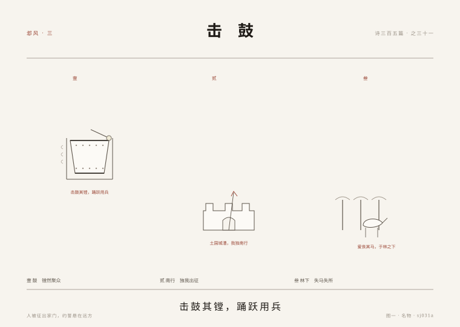
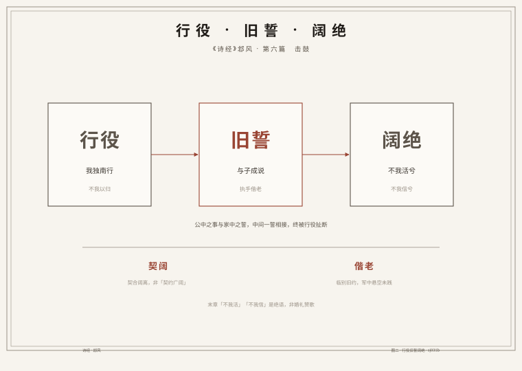

第三十一篇 击鼓
邶风 · 之三 SJ031
朗读 · 普通话
依经文正文朗读，句读从文；不配乐、不改速、不加拖腔。全库同一音色（豆包 TTS），非播音员录制。
一 解题
诗三判：
- 谁在说：一个被征从军、南行不归的士卒。他先报军中之事，再追述离家前与爱人的约誓，末章发出绝语。
- 说什么事：击鼓练兵，人家筑城卫国，我独独南行；跟随孙子仲去平陈、宋，不许我归。居处无定，马匹走失；回想当初「死生契阔，与子成说；执子之手，与子偕老」——而今相隔阔远，不能相会，约誓也难以取信了。
- 为何编在此：前几篇写家室之怨、遇暴之系，此篇写征役之阔。人被征出家门，礼法、约誓都悬在远方；邶风之「变」，由室内推到行伍，怨由私情及于公事。
《毛序》：「《击鼓》，怨州吁也。卫州吁用兵暴乱，使公孙文仲将而平陈与宋，国人怨其勇而无礼也。」——系于州吁用兵，国人怨之。
朱子《诗集传》：「从役者自言其兵事，而以与其家之别为言。」——朱子把重点落在从役者之别与思归。
本库的看法：这首诗的骨在从军不归、契阔之誓——「死生契阔，与子成说；执子之手，与子偕老」。
后世以此章为婚礼之誓，读得温暖；在诗里，它是悬在军中的旧约：当年执手，原说同老，如今一去阔绝。末章「于嗟阔兮，不我活兮」是绝语——不是约不美好，是活着已难践约。
二 经文
第一章
擊鼓其鏜，踴躍用兵。土國城漕，我獨南行。
第二章
從孫子仲，平陳與宋。不我以歸，憂心有忡。
第三章
爰居爰處？爰喪其馬？于以求之？于林之下。
第四章
死生契闊，與子成說。執子之手，與子偕老。
第五章
于嗟闊兮，不我活兮。于嗟洵兮，不我信兮。
分章：毛传、朱子皆五章，章四句。一、二章叙行役；三章失马与居处之问；四章追叙旧誓；五章叹绝。章法由事入忆，由忆入叹，一章一折。
三 韵读
| 一 |
鏜、兵、行 |
陽部 |
| 二 |
仲、宋、忡 |
東部 |
| 三 |
處、馬、下 |
魚部 |
| 四 |
闊、說（月部）；老（幽部） |
月部／幽部 |
| 五 |
闊、活（月部）；洵、信（真部） |
月部／真部 |
一章陽部响亮，像鼓声军容；二章東部沉郁，忧心有忡；三章魚部宽而失据；四月部入声，「契阔」声紧；五章月部、真部两转，「活」「信」皆落不下去。全篇落脚声是「不我信」——约誓难践。
四 字义与名物
- 擊鼓——击鼓聚众。
- 鏜（tāng）——鼓声。
- 踴躍——操练时腾跃进退。
- 用兵——操演兵器。
- 土國城漕——在国内挖土筑城，在漕地筑城。土，掘土；城，筑城。漕，卫邑名。
- 我獨南行——独我一人南征。
- 孫子仲——卫将，即公孙文仲。
- 平陳與宋——调停陈、宋两国之和。平，和。
- 不我以歸——不以我归，不许我回家。
- 有忡——忧心忡忡。忡，心神不定。
- 爰——于何，在哪里。不是「于是」。
- 居、處——居处，停留安身之所。
- 喪其馬——走失了坐骑。
- 于以——于何，在哪里。
- 林之下——林野之下。
- 契闊——契，合；阔，离。合离，聚散。不是「契约广阔」。
- 成說——成言，立下约誓。说，言语、约言。
- 執子之手——拉着你的手。
- 偕老——一同到老。
- 于嗟——叹词。
- 闊——阔别，远离。
- 不我活——不与我相会。活，通「佸」，会合。不是「不能活」。
- 洵（xún）——信，久，一说「远」。
- 不我信——不使我守约/不能取信。信，守信、践约。
五 今译
第一章
鼓声咚咚响，腾跃练兵器。别人在国内筑城，独我向南出征。
第二章
跟着孙子仲，去平陈与宋。不肯放我回去，心里忧忡忡。
第三章
在哪里安身？在哪里走失了马？到哪里去找它？在那树林之下。
第四章
无论死生聚散，我与你立过约：拉着你的手，和你一同到老。
第五章
唉，相隔阔远，不能与我相会！唉，约誓长久，不能使我践约！
译注：「契阔」译「聚散合离」，契为合、阔为离，不可解作「契约广阔」；「成说」译「立下约誓」；「爰」「于以」皆「于何」；「活」读「佸」，会合，非活命；「洵」为信、为久，「不我信」是约誓难践。
六 章旨
一章：独南行。他人筑城，我独出征。
二章：不得归。从征平乱，忧心忡忡。
三章：失所失马。行伍无定，马亦走失。
四章：追旧誓。执手偕老，本是临别之约。
五章：叹阔绝。相隔既远，相会无期，旧誓难信。
一、二章是公中之事：兵、城、将、国；三章是行伍之散；四章忽然拉回家中之人；五章再落回军中之绝。公与私两段，中间以「契阔」一誓相接——家的约被行役扯断。
此即本卷「征役之阔」，与召南安守其家者全异。
七 诗教
- 赋：直陈行役、失马、旧誓与绝叹，是赋；四章之誓是回忆中的实事，非比兴。
- 观：可观一「役」。征发之下，人有家不能归，有约不能践；观历代征役之苦，此篇是标本。
- 群：士卒与将帅、与同征者在「群」中；而他与家中之人被拆开，正是群中失群。
- 怨：怨在「独南行」「不我以归」；怨而不骂将、不背军，只叹阔绝。
八 分寸与边界
- 不可把「契阔」解作「契约广阔」。契为合、阔为离，契阔即聚散合离。
- 不可把「成说」解成「说成了、谈妥」之泛语。成说是成言、约誓，郑重立下的话。
- 不可把「爰居爰处」的「爰」解作「于是」。爰是于何，问句：在哪里安身。
- 不可把「不我活」解作「不让我活下去」。活通「佸」，会合；是不能相会。
- 不可把四章「执子之手，与子偕老」读作婚礼赞歌而忽略五章之绝。在诗里，这誓是悬空未践的；后世挪作婚誓，已非诗本位。
九 存疑
- 史实所指：毛序系州吁使公孙文仲平陈宋；一说卫人助州吁伐郑；本事今难确考。本库只取征役之情。
- 「平陈与宋」之「平」：一说和调二国，一说「平」为征伐平定。本库取调和。
- 「丧马」之喻：一说实写走失战马，一说以马失所喻人失所。本库两存，取行伍失据。
- 「洵」字：毛传「洵，信」；一说「洵，久」；一说「洵，远」。本库取信、久。
- 四章为谁之约：一说与妻子别时之誓，一说与战友死生相托。本库从夫妇之约，存战友一说。
十 跨典
- 《左传·隐公四年》：州吁弑桓公自立，「将修先君之怨于郑」，并结好陈、宋——毛序「平陈与宋」所系之史事；可参此篇行役之由。
- 《豳风·东山》「我徂东山，慆慆不归」——同是征夫怀归；彼归家途中想象，此军中追誓而绝。
- 《小雅·采薇》「昔我往矣，杨柳依依」——征役之诗两大名篇；一往一归，情皆在别后。
- 《王风·君子于役》「君子于役，不知其期」——家中思与军中怨，两面相合；役无期则家不合。
- 后世婚誓：「执子之手，与子偕老」后世遂为婚礼常用之辞；其源出于军中别誓，语意已由悲绝转为相守，读诗当还其本意。
十一 双卡与图
双卡五对：
| 契阔（合离聚散） |
契约广阔（误训） |
| 成说（成言约誓） |
谈妥（泛训） |
| 爰（于何） |
于是（误训） |
| 活（佸，会合） |
活命（误训） |
| 军中追誓 |
后世婚誓 |

图一 · 鼓·行伍·林下马 名物图

图二 · 行役—旧誓—阔绝 义理图
读图三处：
- 鼓与兵求可辨：名物图取鼓形、兵械与南行之路三处特写；不画整队兵马，小尺度下全形必失真。
- 马在林下：三章「于林之下」寻马，图上林缘置一马与失马之问；马只取轮廓与缰线。
- 义理三格是一条断链：行役—旧誓—阔绝，箭头走到末格即断；两尺标出「契阔」「偕老」，见誓在而人隔。